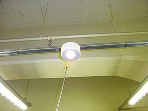
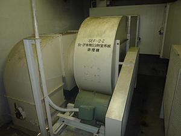
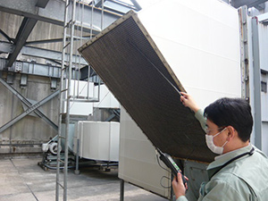
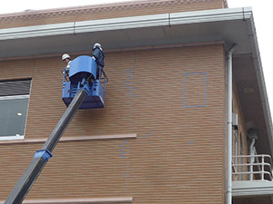
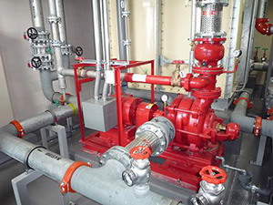
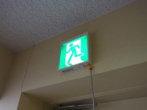
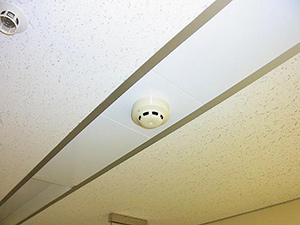

特殊建築物定期調査・建築設備定期検査・消防用設備等点検
INSPECTION
各種法定点検
特殊建築物定期検査、建築設備定期検査
目的
■特殊建築物定期検査：建物自体の不具合等を確認します。
■建築設備定期検査：建物の付帯設備の不具合等を確認します。
近年、建築物の設備や遊園地の遊具などで事故が相次ぎ、多くの負傷者や死者を出しました。
そのため、判定基準が明確化され、報告内容も充実しています。
方法
1.ヒアリング調査 2.目視調査 3.照度・風量測定
- 
- 
- 
- 
消防用設備等定期点検
人命や財産を災害から守るため、消防用設備等は火災などが発生した際には、確実にその機能を発揮できるものでなければなりません。そのためにも設備の管理・点検が必要となります。
方法
1.ヒアリング調査 2.目視調査 3.機能確認 4.各種測定
- 
- 
- 
その他、空気環境の測定や、結露調査などもあります。